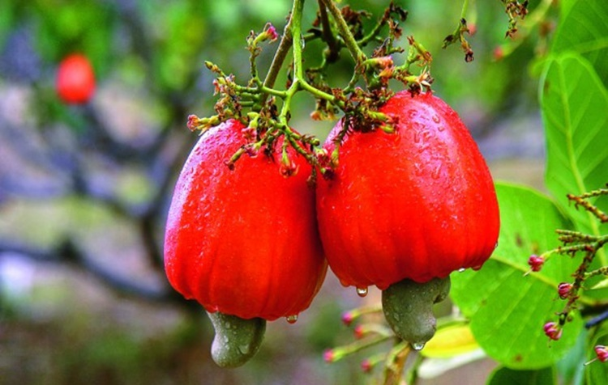
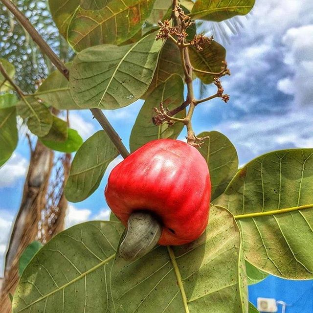
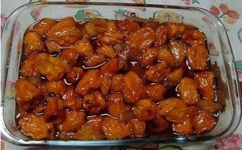

Cajuí
Cajuí, cajuzinho-do-cerrado ou cajuzinho-do-campo são os nomes dados aos cajus nativos do bioma Cerrado. Espécies ainda pouco estudadas, Anacardium nanum e Anacardium humile, são plantas de porte arbustivo encontradas nos estados do Mato Grosso, Mato Grosso do Sul, Minas Gerais e no Distrito Federa
Características gerais:
A planta floresce entre os meses de setembro e outubro, dando frutos em novembro. Alguns animais se alimentam do cajuí, como é o caso da raposa do campo. O animal ajuda, dessa forma, a dispersar as sementes.
Eugenia dysenterica DC, Myrtaceae, é uma fruta muito apreciada, nativa nos cerrados brasileiros. A cagaita só é comercializada em pequeno volume e na sua região de origem, sendo coletada de plantas nativas, em vários estados brasileiros, mais na região central do País. Os frutos são bagas pequenas, amarelas quando maduros e têm de 14 a 20 g, medem de 3 a 4 cm de comprimento e 3 a 5 cm de diâmetro. A casca é brilhante, amarela e membranácea. A semente, de uma até três por fruto, de cor creme e oval, pesa, em média, 1,5 g. A polpa é suculenta, ácida, mas agradável, com efeito laxante quando comida quente ou em muita quantidade.
Os frutos caem do pé, após amadurecerem, em 30 a 40 dias após a florada. Têm bom teor de riboflavina, com 421 mcg; niacina, com 0,13 a 0,137 mg e 72 mg de acido ascórbico; 0,42 mg de vitamina B2. Seu uso, além de ao natural, é para se fazer suco, geleia, doces e licores. Além disso, podem ser usadas sua madeira e casca, esta para curtume, além das folhas, para fins medicinais. Os frutos são muito perecíveis, devendo ser colhidos e colocados em caixas em pequenas camadas e consumidos logo ou colocados em geladeira. A produção ocorre entre outubro e dezembro.
Estudos da Universidade Federal de Goiás mostram que há pouca diferença entre populações quanto à produção e que o fruto está apto para colher, em média, entre 30 e 40 dias após a florada, no período chuvoso.
Nutrientes da fruta
O cajuí é um alimento rico em vitamina C; ele tem aproximadamente 5 vezes mais vitamina C do que a laranja, por exemplo. Por esse motivo, é um ótimo reforço para o nosso sistema imunológico. Quanto mais maduro, maior quantidade de vitamina C ele possui. Também é fonte de sais minerais, como o zinco e ferro. Além de auxiliar na cicatrização de feridas e combate a infecções e inflamações, previne a anemia. Outros minerais encontrados na polpa são o cálcio – que fortalece os ossos do corpo -, o fósforo – que participa do metabolismo de micronutrientes do corpo, e o cobre – que melhora a saúde da pele e dos cabelos. Os aminoácidos de cadeia ramificada presentes no caju auxiliam a perda de peso. Pois estimulam o uso da gordura como fonte de energia durante as atividades físicas. Por ser rico em fibras, estimula o funcionamento do sistema digestivo do organismo também. Além disso, é um alimento pouco calórico.
O fruto:
- itamina E – um potente antioxidante do organismo;
- Ômega 3 – diminui o risco de doenças cardiovasculares e inflamações;
- Selênio – reduz a incidência de câncer e melhora sintomas de enxaqueca;
- Aminoácido triptofano – ajuda a reduzir sintomas de depressão.
Uso do Cajuí:
O Cajuí é amplamente plantado no Brasil e, quando falamos em frutas, só fica atrás da laranja. Mais comum no Nordeste, seu consumo pode ser feito em pratos doces, salgados e bebidas. Ele é, na verdade, um pseudofruto e conta com uma textura carnosa:
Doce de Cajuí
Doce de cajuí é um doce típico da culinária brasileira, especialmente da Região Nordeste, feito a base de pedúnculo do Cajuí inteiro ou em pedaços, com ou sem película, e açúcar, podendo conter, opcionalmente, cravo-da-índia.
Sua origem vem do período colonial, tendo sido favorecido pela abundância das frutas tropicais e do açúcar dos engenhos na Região Nordeste do Brasil. Pode ser apresentado de diversas formas, desde em compota, com calda, pastoso, em barra, com a presença ou não castanha e até mesmo em forma de balas ou trufas.